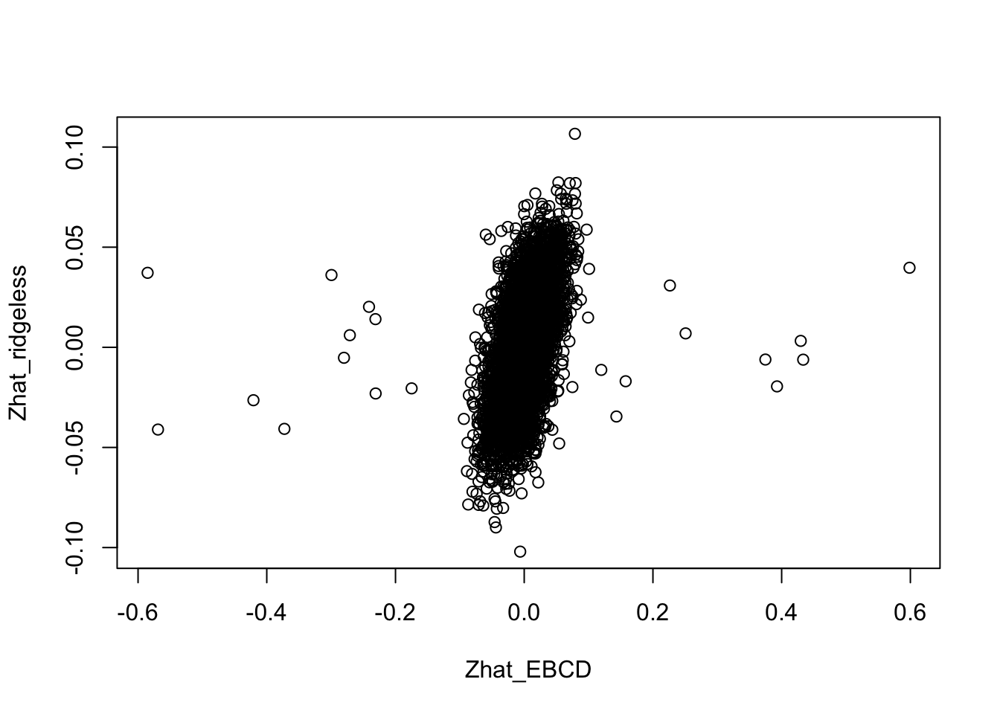
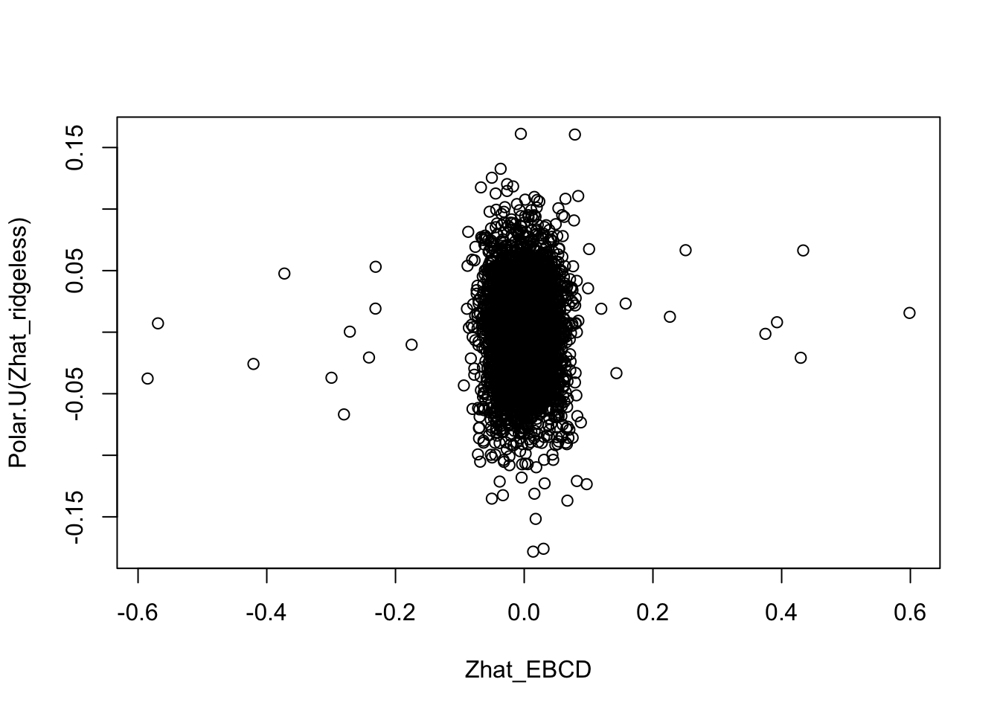
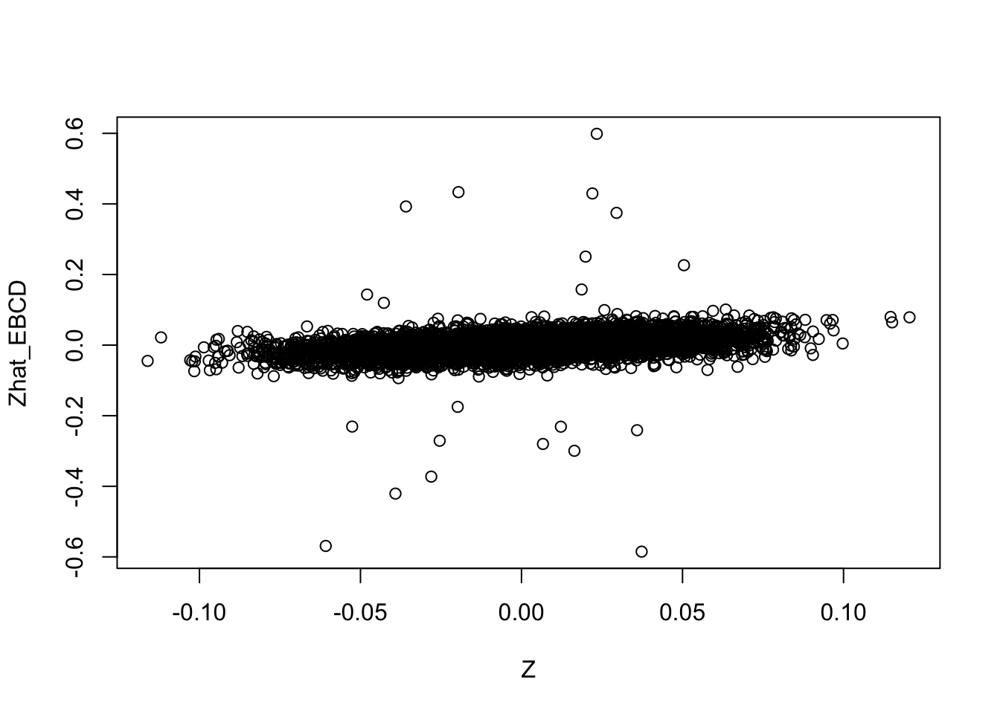
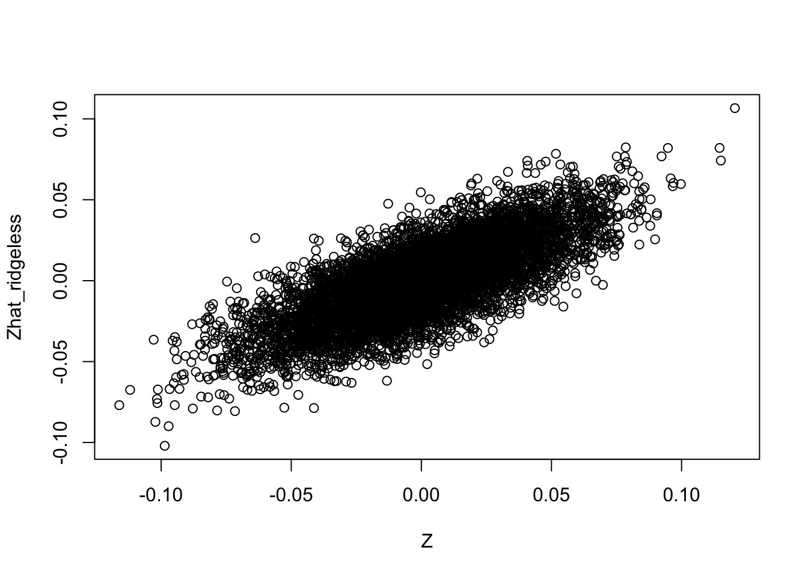
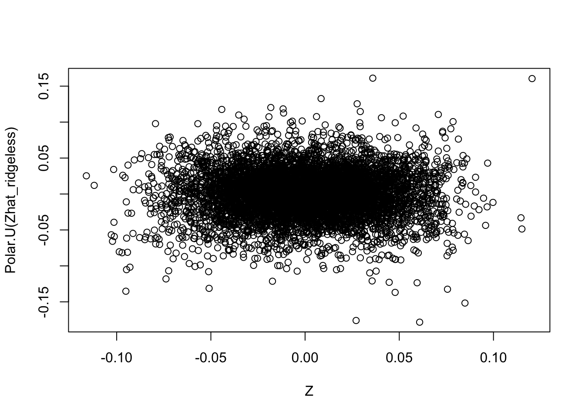

Last updated: 2024-05-31
Checks: 7 0
Knit directory: misc/analysis/
This reproducible R Markdown analysis was created with workflowr (version 1.7.1). The Checks tab describes the reproducibility checks that were applied when the results were created. The Past versions tab lists the development history.
Great! Since the R Markdown file has been committed to the Git repository, you know the exact version of the code that produced these results.
Great job! The global environment was empty. Objects defined in the global environment can affect the analysis in your R Markdown file in unknown ways. For reproduciblity it’s best to always run the code in an empty environment.
The command set.seed(1) was run prior to running the
code in the R Markdown file. Setting a seed ensures that any results
that rely on randomness, e.g. subsampling or permutations, are
reproducible.
Great job! Recording the operating system, R version, and package versions is critical for reproducibility.
Nice! There were no cached chunks for this analysis, so you can be confident that you successfully produced the results during this run.
Great job! Using relative paths to the files within your workflowr project makes it easier to run your code on other machines.
Great! You are using Git for version control. Tracking code development and connecting the code version to the results is critical for reproducibility.
The results in this page were generated with repository version 23a05b5. See the Past versions tab to see a history of the changes made to the R Markdown and HTML files.
Note that you need to be careful to ensure that all relevant files for
the analysis have been committed to Git prior to generating the results
(you can use wflow_publish or
wflow_git_commit). workflowr only checks the R Markdown
file, but you know if there are other scripts or data files that it
depends on. Below is the status of the Git repository when the results
were generated:
Ignored files:
Ignored: .DS_Store
Ignored: .Rhistory
Ignored: .Rproj.user/
Ignored: analysis/.RData
Ignored: analysis/.Rhistory
Ignored: analysis/ALStruct_cache/
Ignored: data/.Rhistory
Ignored: data/methylation-data-for-matthew.rds
Ignored: data/pbmc/
Ignored: data/pbmc_purified.RData
Untracked files:
Untracked: .dropbox
Untracked: Icon
Untracked: analysis/GHstan.Rmd
Untracked: analysis/GTEX-cogaps.Rmd
Untracked: analysis/PACS.Rmd
Untracked: analysis/Rplot.png
Untracked: analysis/SPCAvRP.rmd
Untracked: analysis/abf_comparisons.Rmd
Untracked: analysis/admm_02.Rmd
Untracked: analysis/admm_03.Rmd
Untracked: analysis/cache/
Untracked: analysis/cholesky.Rmd
Untracked: analysis/compare-transformed-models.Rmd
Untracked: analysis/cormotif.Rmd
Untracked: analysis/cp_ash.Rmd
Untracked: analysis/eQTL.perm.rand.pdf
Untracked: analysis/eb_prepilot.Rmd
Untracked: analysis/eb_var.Rmd
Untracked: analysis/ebpmf1.Rmd
Untracked: analysis/ebpmf_sla_text.Rmd
Untracked: analysis/ebspca_sims.Rmd
Untracked: analysis/explore_psvd.Rmd
Untracked: analysis/fa_check_identify.Rmd
Untracked: analysis/fa_iterative.Rmd
Untracked: analysis/flash_test_tree.Rmd
Untracked: analysis/flash_tree.Rmd
Untracked: analysis/flashier_newgroups.Rmd
Untracked: analysis/flashier_nmf_triples.Rmd
Untracked: analysis/flashier_pbmc.Rmd
Untracked: analysis/flashier_snn_shifted_prior.Rmd
Untracked: analysis/greedy_ebpmf_exploration_00.Rmd
Untracked: analysis/ieQTL.perm.rand.pdf
Untracked: analysis/lasso_em_03.Rmd
Untracked: analysis/m6amash.Rmd
Untracked: analysis/mash_bhat_z.Rmd
Untracked: analysis/mash_ieqtl_permutations.Rmd
Untracked: analysis/methylation_example.Rmd
Untracked: analysis/mixsqp.Rmd
Untracked: analysis/mr.ash_lasso_init.Rmd
Untracked: analysis/mr.mash.test.Rmd
Untracked: analysis/mr_ash_modular.Rmd
Untracked: analysis/mr_ash_parameterization.Rmd
Untracked: analysis/mr_ash_ridge.Rmd
Untracked: analysis/mv_gaussian_message_passing.Rmd
Untracked: analysis/nejm.Rmd
Untracked: analysis/nmf_bg.Rmd
Untracked: analysis/normal_conditional_on_r2.Rmd
Untracked: analysis/normalize.Rmd
Untracked: analysis/pbmc.Rmd
Untracked: analysis/pca_binary_weighted.Rmd
Untracked: analysis/pca_l1.Rmd
Untracked: analysis/poisson_nmf_approx.Rmd
Untracked: analysis/poisson_shrink.Rmd
Untracked: analysis/poisson_transform.Rmd
Untracked: analysis/qrnotes.txt
Untracked: analysis/ridge_iterative_02.Rmd
Untracked: analysis/ridge_iterative_splitting.Rmd
Untracked: analysis/samps/
Untracked: analysis/sc_bimodal.Rmd
Untracked: analysis/shrinkage_comparisons_changepoints.Rmd
Untracked: analysis/susie_cov.Rmd
Untracked: analysis/susie_en.Rmd
Untracked: analysis/susie_z_investigate.Rmd
Untracked: analysis/svd-timing.Rmd
Untracked: analysis/temp.RDS
Untracked: analysis/temp.Rmd
Untracked: analysis/test-figure/
Untracked: analysis/test.Rmd
Untracked: analysis/test.Rpres
Untracked: analysis/test.md
Untracked: analysis/test_qr.R
Untracked: analysis/test_sparse.Rmd
Untracked: analysis/tree_dist_top_eigenvector.Rmd
Untracked: analysis/z.txt
Untracked: code/multivariate_testfuncs.R
Untracked: code/rqb.hacked.R
Untracked: data/4matthew/
Untracked: data/4matthew2/
Untracked: data/E-MTAB-2805.processed.1/
Untracked: data/ENSG00000156738.Sim_Y2.RDS
Untracked: data/GDS5363_full.soft.gz
Untracked: data/GSE41265_allGenesTPM.txt
Untracked: data/Muscle_Skeletal.ACTN3.pm1Mb.RDS
Untracked: data/P.rds
Untracked: data/Thyroid.FMO2.pm1Mb.RDS
Untracked: data/bmass.HaemgenRBC2016.MAF01.Vs2.MergedDataSources.200kRanSubset.ChrBPMAFMarkerZScores.vs1.txt.gz
Untracked: data/bmass.HaemgenRBC2016.Vs2.NewSNPs.ZScores.hclust.vs1.txt
Untracked: data/bmass.HaemgenRBC2016.Vs2.PreviousSNPs.ZScores.hclust.vs1.txt
Untracked: data/eb_prepilot/
Untracked: data/finemap_data/fmo2.sim/b.txt
Untracked: data/finemap_data/fmo2.sim/dap_out.txt
Untracked: data/finemap_data/fmo2.sim/dap_out2.txt
Untracked: data/finemap_data/fmo2.sim/dap_out2_snp.txt
Untracked: data/finemap_data/fmo2.sim/dap_out_snp.txt
Untracked: data/finemap_data/fmo2.sim/data
Untracked: data/finemap_data/fmo2.sim/fmo2.sim.config
Untracked: data/finemap_data/fmo2.sim/fmo2.sim.k
Untracked: data/finemap_data/fmo2.sim/fmo2.sim.k4.config
Untracked: data/finemap_data/fmo2.sim/fmo2.sim.k4.snp
Untracked: data/finemap_data/fmo2.sim/fmo2.sim.ld
Untracked: data/finemap_data/fmo2.sim/fmo2.sim.snp
Untracked: data/finemap_data/fmo2.sim/fmo2.sim.z
Untracked: data/finemap_data/fmo2.sim/pos.txt
Untracked: data/logm.csv
Untracked: data/m.cd.RDS
Untracked: data/m.cdu.old.RDS
Untracked: data/m.new.cd.RDS
Untracked: data/m.old.cd.RDS
Untracked: data/mainbib.bib.old
Untracked: data/mat.csv
Untracked: data/mat.txt
Untracked: data/mat_new.csv
Untracked: data/matrix_lik.rds
Untracked: data/paintor_data/
Untracked: data/running_data_chris.csv
Untracked: data/running_data_matthew.csv
Untracked: data/temp.txt
Untracked: data/y.txt
Untracked: data/y_f.txt
Untracked: data/zscore_jointLCLs_m6AQTLs_susie_eQTLpruned.rds
Untracked: data/zscore_jointLCLs_random.rds
Untracked: explore_udi.R
Untracked: output/fit.k10.rds
Untracked: output/fit.nn.pbmc.purified.rds
Untracked: output/fit.nn.rds
Untracked: output/fit.nn.s.001.rds
Untracked: output/fit.nn.s.01.rds
Untracked: output/fit.nn.s.1.rds
Untracked: output/fit.nn.s.10.rds
Untracked: output/fit.snn.s.001.rds
Untracked: output/fit.snn.s.01.nninit.rds
Untracked: output/fit.snn.s.01.rds
Untracked: output/fit.varbvs.RDS
Untracked: output/fit2.nn.pbmc.purified.rds
Untracked: output/glmnet.fit.RDS
Untracked: output/snn07.txt
Untracked: output/snn34.txt
Untracked: output/test.bv.txt
Untracked: output/test.gamma.txt
Untracked: output/test.hyp.txt
Untracked: output/test.log.txt
Untracked: output/test.param.txt
Untracked: output/test2.bv.txt
Untracked: output/test2.gamma.txt
Untracked: output/test2.hyp.txt
Untracked: output/test2.log.txt
Untracked: output/test2.param.txt
Untracked: output/test3.bv.txt
Untracked: output/test3.gamma.txt
Untracked: output/test3.hyp.txt
Untracked: output/test3.log.txt
Untracked: output/test3.param.txt
Untracked: output/test4.bv.txt
Untracked: output/test4.gamma.txt
Untracked: output/test4.hyp.txt
Untracked: output/test4.log.txt
Untracked: output/test4.param.txt
Untracked: output/test5.bv.txt
Untracked: output/test5.gamma.txt
Untracked: output/test5.hyp.txt
Untracked: output/test5.log.txt
Untracked: output/test5.param.txt
Unstaged changes:
Modified: .gitignore
Modified: analysis/flashier_log1p.Rmd
Modified: analysis/flashier_sla_text.Rmd
Modified: analysis/logistic_z_scores.Rmd
Modified: analysis/mr_ash_pen.Rmd
Modified: analysis/susie_flash.Rmd
Note that any generated files, e.g. HTML, png, CSS, etc., are not included in this status report because it is ok for generated content to have uncommitted changes.
These are the previous versions of the repository in which changes were
made to the R Markdown (analysis/tree_ebcd.Rmd) and HTML
(docs/tree_ebcd.html) files. If you’ve configured a remote
Git repository (see ?wflow_git_remote), click on the
hyperlinks in the table below to view the files as they were in that
past version.
| File | Version | Author | Date | Message |
|---|---|---|---|---|
| Rmd | 23a05b5 | Matthew Stephens | 2024-05-31 | workflowr::wflow_publish("tree_ebcd.Rmd") |
I want to understand what the EBCD solution for \(Z\) looks like in the case of a tree (where factors in \(L\) are linearly dependent), and compare it with the “ridgeless regression” solution (ridge regression with a very small penalty). I also look at orthogonalizing the ridgeless regression solution. It turns out that the orthogonal estimates are considerably further from the true values than the ridgeless solution.
It makes me want to reassess the possibility of doing a version of EBMF with sparse prior on L and normal prior on Z, integrating out \(Z\) (jointly across all factors) by exploiting the fact that p(Z|L,X) is analytically available for a normal prior on Z. That is, something like a variational approximation of the form q(L,Z) = q(l1)…q(lk) q(Z). I think Jason Willwerscheid
The EBCD model is \(X=ZL' + E\) where \(X\) is \(p \times n\), \(Z\) is \(p \times k\), and \(L\) is \(n \times k\), and \(Z'Z=I_k\) and the error matrix \(E\) has constant error terms.
Given \(L\) the EBCD solution is \(\hat{Z} = Polar.U(XL)\).
Also, given \(L\) the ridgeless regression solution is \(\hat{Z} = (XL)(L'L + \lambda I)^{-1}\) with \(\lambda \to 0\).
Here I compute these estimates on simulated data.
# set up L to be a tree with 4 tips and 7 branches (including top shared branch)
set.seed(1)
L = cbind(c(1,1,1,1),c(1,1,0,0),c(0,0,1,1),diag(4))
p = 1000
Z = matrix(rnorm(7*p)/sqrt(p),ncol=7)
X = Z %*% t(L)Now let’s compute the EBCD solution for \(Z\) given \(L\).
Polar.U = function(X) {
svdX = svd(X)
U = svdX$u
V = svdX$v
Z = U %*% V
return(Z)
}
Zhat_EBCD = Polar.U(X %*% L)And the ridgeless regression solution for \(Z\) given \(L\). I use \(lambda=1e-6\).
Zhat_ridgeless = X %*% L %*% solve(t(L) %*% L + 1e-6*diag(7)) Now let’s compare the two solutions.
plot(Zhat_EBCD,Zhat_ridgeless)
We can also orthogonalize the ridgeless solution:
plot(Zhat_EBCD,Polar.U(Zhat_ridgeless))
Compare the estimates with the truth, it is clear that the orthogonal solutions are not as close to the truth as the (non-orthogonal) ridgeless solution.
plot(Z,Zhat_EBCD)
plot(Z,Zhat_ridgeless)
plot(Z,Polar.U(Zhat_ridgeless))
The maximum likelihood estimate for \(L\) is \(X'Z(Z'Z)^-1\), or just \(X'Z\) for the case where \(Z\) is orthogonal. We can see that the estimates for \(L\) from these estimated \(Z\)s are very different from the true \(L\).
t(X) %*% Z # use true Z for comparison [,1] [,2] [,3] [,4] [,5] [,6]
[1,] 1.102198 1.10431007 0.0880107137 1.11950583 -0.02735503 -0.08384765
[2,] 1.038237 1.09796987 -0.0004146382 0.04294618 0.94948187 -0.03021533
[3,] 1.103681 0.05696917 1.1431288765 -0.05428978 -0.15304383 0.96692646
[4,] 1.111669 0.06652107 1.0786249037 0.05591446 -0.10853902 -0.01437871
[,7]
[1,] 0.04389647
[2,] 0.03182936
[3,] -0.07089470
[4,] 1.03156623t(X) %*% Zhat_EBCD [,1] [,2] [,3] [,4] [,5] [,6]
[1,] 1.3566380 0.92803423 -0.2214682 0.3190617 -0.1442323 -0.04998167
[2,] 1.4032931 0.09880374 0.2526351 -0.3216227 0.4427178 0.56912764
[3,] 0.9830229 -0.74304136 -0.1805494 0.2269756 -1.2014134 0.29403886
[4,] 0.4263371 -0.28631537 0.1855830 -0.2475666 -1.0533563 -0.03126267
[,7]
[1,] 0.6709319
[2,] 0.6477064
[3,] 0.2851719
[4,] 1.3235760t(X) %*% Polar.U(Zhat_ridgeless) [,1] [,2] [,3] [,4] [,5] [,6]
[1,] 1.0383605 -0.7822616 0.5041554 0.84925740 0.5350675 0.58533737
[2,] 1.3584486 -0.6156229 0.3975160 0.06247522 -0.5333474 0.60876373
[3,] 0.2081658 -1.0274163 -0.5136721 0.05272136 0.4515585 0.46377117
[4,] 0.8533019 -0.2782730 0.1600512 -0.27963614 0.9778069 -0.05006597
[,7]
[1,] 0.1776506
[2,] -0.2105689
[3,] -1.1954882
[4,] -1.1635612The use of Zhat_ridgeless directly gives a good estimate of \(L\) (the MLE from Zhat_ridgeless gives essentially the exact answer, presumably because it is just inverting the process that gave Zhat_ridgeless).
t(X) %*% Zhat_ridgeless [,1] [,2] [,3] [,4] [,5] [,6]
[1,] 1.120804 1.087852095 0.032952219 1.11735591 -0.02950381 -0.047395883
[2,] 1.048871 1.055699202 -0.006828121 0.07458221 0.98111699 -0.034436371
[3,] 1.071945 -0.009974563 1.081919994 0.04438969 -0.05436426 1.059870056
[4,] 1.100219 0.034439539 1.065779114 0.09944643 -0.06500689 0.009917608
[,7]
[1,] 0.08034810
[2,] 0.02760825
[3,] 0.02204994
[4,] 1.05586151t(X) %*% Zhat_ridgeless %*% solve(t(Zhat_ridgeless) %*% Zhat_ridgeless + 1e-6*diag(7)) [,1] [,2] [,3] [,4] [,5]
[1,] 0.9999992 9.999993e-01 -6.570554e-08 9.999997e-01 -4.046565e-07
[2,] 0.9999992 9.999993e-01 -1.021763e-07 -3.134373e-07 9.999996e-01
[3,] 0.9999992 -1.051062e-07 9.999993e-01 -8.284815e-09 -9.731525e-08
[4,] 0.9999992 -6.560003e-08 9.999993e-01 4.094909e-08 -1.071603e-07
[,6] [,7]
[1,] -8.891584e-08 2.252273e-08
[2,] -7.767085e-08 -2.531488e-08
[3,] 9.999997e-01 -3.621790e-07
[4,] -3.699679e-07 9.999997e-01
sessionInfo()R version 4.2.1 (2022-06-23)
Platform: x86_64-apple-darwin17.0 (64-bit)
Running under: macOS Big Sur ... 10.16
Matrix products: default
BLAS: /Library/Frameworks/R.framework/Versions/4.2/Resources/lib/libRblas.0.dylib
LAPACK: /Library/Frameworks/R.framework/Versions/4.2/Resources/lib/libRlapack.dylib
locale:
[1] en_US.UTF-8/en_US.UTF-8/en_US.UTF-8/C/en_US.UTF-8/en_US.UTF-8
attached base packages:
[1] stats graphics grDevices utils datasets methods base
loaded via a namespace (and not attached):
[1] Rcpp_1.0.12 rstudioapi_0.15.0 whisker_0.4.1 knitr_1.45
[5] magrittr_2.0.3 workflowr_1.7.1 R6_2.5.1 rlang_1.1.2
[9] fastmap_1.1.1 fansi_1.0.6 highr_0.10 stringr_1.5.1
[13] tools_4.2.1 xfun_0.41 utf8_1.2.4 cli_3.6.2
[17] git2r_0.33.0 jquerylib_0.1.4 htmltools_0.5.7 rprojroot_2.0.4
[21] yaml_2.3.8 digest_0.6.33 tibble_3.2.1 lifecycle_1.0.4
[25] later_1.3.2 sass_0.4.8 vctrs_0.6.5 fs_1.6.3
[29] promises_1.2.1 cachem_1.0.8 glue_1.6.2 evaluate_0.23
[33] rmarkdown_2.25 stringi_1.8.3 bslib_0.6.1 compiler_4.2.1
[37] pillar_1.9.0 jsonlite_1.8.8 httpuv_1.6.13 pkgconfig_2.0.3